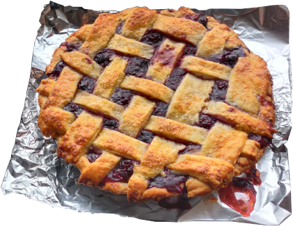

return to homepage
Berry Pie

Image taken from Wikimedia (opens in a new tab)
description
"This is a delicious berry pie that combines both blueberries and blackberries. You can use fresh or frozen berries. Marionberries may be substituted for blackberries."
recipe by Debbie Sanchez (opens in new page)
Ingredients
Pie Crust:
- ⅔ cup shortening, chilled
- 2 cups all-purpose flour
- 1 teaspoon salt
- 5 tablespoons cold water
Filling:
- 3/4 cup white sugar
- 1/2 teaspoon ground cinnamon
- 4 cups fresh blueberries
- 1 1/2 cups fresh blackberries
- 1 tablespoon lemon juice
- 2 tablespoons butter
- 1/3 cup all-purpose flour
Instructions
- Cut shortening into 2 cups flour and salt until the shortening is the size of small peas. Sprinkle in water 1 tablespoon at a time until flour is moistened. Gather into a ball, wrap with plastic, and refrigerate at least 30 minutes. Divide the dough in half and roll out half on a lightly floured board. Line a 9-inch pie dish with the pastry. Roll out the top crust and set aside.
- Preheat oven to 425 degrees F (220 degrees C).
- Mix sugar, 1/3 cup flour, and cinnamon. Stir in berries to coat. Pour the filling into the pastry-lined pan. Sprinkle with lemon juice and dot with butter. Cover with top crust; cut slits in the top to vent the steam. Seal the crust and flute the edges.
- Cover the edges of the crust with foil to prevent over-browning. Bake in the preheated oven until the crust is golden brown and the juices are bubbling, about 45 minutes. Remove foil during the last 12 minutes of baking.
A Note From Debbie:
"If you use frozen berries, you'll need to increase the baking time. Bake as directed, and then reduce the heat to 350 degrees F (175 degrees C). Bake until the juices are bubbling, about 30 minutes more."
return to hompage